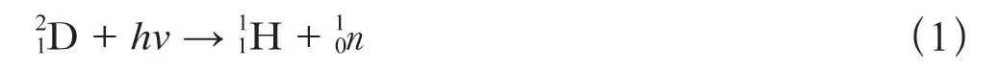

英文
英文查德威克，戈德哈伯
编者按
1934年，仍有一些物理学家对于中子是真正的亚原子粒子抑或是电子和质子的结合体而感到疑惑。这篇文章中，詹姆斯·查德威克和莫里斯·戈德哈伯描述了他们对于中子质量更为精确的实验测定。他们用光子引发“氘核”（重氢的原子核）蜕变为一个质子和一个中子。由于氢原子和重氢原子的质量已经有了非常精确的数值，所以据此可以很容易推算出中子的质量。这一实验表明氘核由一个中子和一个质子构成，该实验也更加牢固地确立了中子是一种基本粒子的理念。 英文
根据原子在光的照射下可以发生激发和电离，人们可以以此类推出，任何具有复杂结构的原子核都会被具有适当能量的γ射线激发或者“电离”（即蜕变）。蜕变要比激发容易探测得多。蜕变发生的必要条件是γ射线的能量大于所放出的粒子的结合能。钍C″放射出的γ射线的能量为hv = 2.62 × 106电子伏，这是能够得到的且具有足够强度的射线中能量最高的，因此，人们期望核蜕变可以产生某种重粒子（例如中子、质子等），而只有在蜕变中质量亏损较小或者为负值的原子核才能产生这种蜕变；像2D、9Be以及放射性原子核则放射出α粒子。由γ射线引起的正电子或负电子发射很难被探测到，除非形成的原子核具有放射性。 英文
首先选择重氢作为研究对象，因为氘核的质量亏损小，并具有最简单的核系统，而且氘核在核理论中的重要性就如同氢原子在原子理论中的一样。我们预期的蜕变反应是：

由于光量子动量非常小，而且质子和中子的质量几乎相等，所以可获取的能量hν – W（W是粒子的结合能）几乎会在质子和中子间平分。 英文
实验过程如下：向电离腔中充满纯度为95%的重氢（重氢是奥利芬特博士慷慨赠予的），我们依照常规的方法将电离腔与一个线性放大器和示波器相连。当我们用放射性钍所放射的γ射线辐照重氢时，示波器就会记录到很多“突跳”。实验证明，这些突跳是氘核蜕变产生的质子引起的。如果我们用相同强度的镭源γ射线照射重氢，观察到的突跳就很少。由此我们推断，能量小于1.8×106电子伏的γ射线无法引发显著的蜕变，因为在镭C能谱的这个能量位置上有一条很强的线。 英文
如果式（1）中假设的核反应过程是正确的，因为氢原子和重氢原子的质量都是精确已知的，其值分别是1.0078和2.0136[1]，所以我们可以对中子质量进行可靠的估算。由于氘核是稳定的，而且可以由能量为2.62×106电子伏的γ射线（钍C″放射的强γ射线）引发蜕变，所以中子质量一定在1.0058和1.0086之间；如果镭C发射的能量为1.8×106电子伏的γ射线不能引发蜕变，那么中子质量一定大于1.0077。如果蜕变反应式（1）中释放的质子能量是可以测量的，那么中子质量就能较为精确地确定了。通过测量上述实验中示波器上突跳的大小可以对质子的能量进行粗略估算，由此得到的能量数值约为250,000电子伏。由这个值导出氘核的结合能为2.1×106电子伏，中子质量为1.0081。不过，这种对质子能量的估算非常粗略，目前我们取中子质量为1.0080，最大误差为±0.0005。 英文
之前根据某些核反应的能量变化估算出来的[2,3]中子质量值为1.007和1.010。然而，这些估算值不仅依赖于对于核过程的假设，还需依赖质谱测量，而有些质谱测量的误差会达到约0.001个质量单位。精确确定中子质量是十分重要的，我们希望这里给出的新方法能够成功解决这个问题。 英文
对膨胀云室中氘核蜕变进行观测的实验正在筹备之中。这些实验将会证实前面假设的核反应过程，进而证实氘核是由一个质子和一个中子构成的。质子的能量以及它们的角分布也都将被测得。 英文
正如我们的实验所表明的那样，如果氘核的质量亏损约为2×106电子伏，那么氘核不能在钋放射出的α粒子的轰击下发生蜕变[4]的原因就会立刻清楚了。当α粒子和一个质量数为M的原子核发生碰撞时，如果碰撞过程中动量是守恒的，那么在α粒子的动能中只有M/(M+4)可以用于诱发蜕变。因此，在参与碰撞的原子核为氘核的情况中，α粒子的动能只有1/3可用于蜕变，而对于钋放射出的α粒子，这个能量小于1.8×106电子伏。而镭C′发射出的能量更高的粒子刚好可以引发蜕变，事实上，邓宁[5]已经在将重水封装于氡管里的实验中观察到了微弱的蜕变效应。 英文
我们的实验给出了能量为2.62×106电子伏的γ射线所引发氘核蜕变时的碰撞截面为10–28平方厘米。在近期即将发表的一篇论文中，贝特与佩尔斯假设中子和质子之间相互作用力符合海森堡、马约拉纳和维格纳提出的设想，从而计算出这个截面的数值。他们使用通常的量子力学方法计算了蜕变的概率，其理论计算给出的碰撞截面数值与实验值具有相同的数量级，但如果我们取中子质量为1.0080，计算值就会相当大了。然而，如果我们设碰撞截面为实验值，那么计算得到的中子质量就是1.0085，这个值似乎太大了。因此，我们只能说理论和实验基本相符，而并非完全一致。 英文
另外还有一点需要提及。利[6]的一些实验表明，用中子轰击固体石蜡发射出一种硬γ射线，这种射线比单独轰击碳原子产生的射线的强度更强且量子能量更高。对此的解释是，中子和质子发生碰撞有时会结合成氘核，并释放出γ射线。这一过程是我们这里所研究的反应的逆过程。现在，如果我们假定氘核、中子、质子三者各自与射线之间的热力学平衡所涉及的所有过程都达到细致平衡，那么无需任何有关相互作用力的假定，我们就能计算出反应式（1）与其逆过程发生的相对概率。用我们在实验中测得的反应式（1）的截面数据，当中子具有2(hν–W) = 1.0×106电子伏的动能，且质子在碰撞前静止时，可以计算出质子俘获中子的俘获截面。在这种特殊情况下，俘获截面σc（在这里我们只考虑俘获后氘核处于基态的情况，忽略了可能存在的更高的激发态）要比“光效应”截面σp小很多。对于利的实验中相关的快中子，俘获截面σc不可能会非常大。因此，似乎很难将利在实验中的观测解释成为质子俘获了中子的结果，因为这个效应应该是非常微弱的。要想找到一个令人满意的解释并不是很容易，这似乎有待更进一步的实验。 英文
（王静 翻译；王乃彦 审稿）